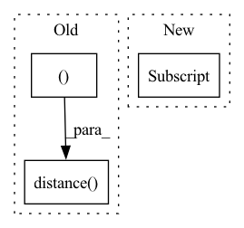

Pattern ID :72
Before Change
lon_cur, lat_cur = parse_coordinate(self.poi_profile.loc[self.poi_profile["geo_id"]
== self.id2location[now_loc]].iloc[0]["coordinates"])
for central in history_loc_central:
history_avg_distance.append(distance.distance( central, (lat_cur, lon_cur )) .kilometers)
return history_avg_distance
After Change
lon_cur, lat_cur = parse_coordinate(self.poi_profile.loc[self.poi_profile["geo_id"]
== self.id2location[now_loc]].iloc[0]["coordinates"])
for central in history_loc_central:
dis = geodistance(central[0], central[1] , lat_cur, lon_cur)
if dis < 1:
dis = 1
history_avg_distance.append(dis)In pattern: SUPERPATTERN
Frequency: 3
Non-data size: 3
Instances Fragment ID: 1010335
Project Name: libcity/bigscity-libcity
Commit Name: c92a3cb2bd0cd104cc466fd3ff62511189ffbe9f
Time: 2021-05-26
Author: 33283819+WenMellors@users.noreply.github.com
File Name: trafficdl/data/dataset/trajectory_encoder/lstpm_encoder.py
M Class Name: LstpmEncoder
N Class Name: LstpmEncoder
M Method Name: _gen_distance_matrix(3)
N Method Name: _gen_distance_matrix(3)
M Parent Class: AbstractTrajectoryEncoder
N Parent Class: AbstractTrajectoryEncoder
M File Name: trafficdl/data/dataset/trajectory_encoder/lstpm_encoder.py
N File Name: trafficdl/data/dataset/trajectory_encoder/lstpm_encoder.py
M Start Line: 172
M End Line: 173
N Start Line: 193
N End Line: 197
Before Change
lon_j, lat_j = parse_coordinate(
self.poi_profile.iloc[origin]["coordinates"])
// 计算 target - origin 的距离，并写入 ld[i][j] 中
ld[i][j] = distance.distance(
(lat_i, lon_i ), (lat_j, lon_j)) .kilometers
td_upper = torch.LongTensor(
[self.up_time] * batch_size).to(self.device).unsqueeze(1)After Change
// 计算 td ld
batch_size = len(dst)
td = dst_time.unsqueeze(1) - current_tim
ld = batch["current_dis"]
loc_len = batch.get_origin_len("current_loc")
td_upper = torch.LongTensor(
[self.up_time] * batch_size).to(self.device).unsqueeze(1) Fragment ID: 1010334
Project Name: libcity/bigscity-libcity
Commit Name: f4f4bf0bf6f127625a07a0457e37b9df412e5b07
Time: 2021-08-23
Author: 842595644@qq.com
File Name: libtraffic/model/trajectory_loc_prediction/STRNN.py
M Class Name: STRNN
N Class Name: STRNN
M Method Name: calculate_loss(2)
N Method Name: calculate_loss(2)
M Parent Class: AbstractModel
N Parent Class: AbstractModel
M File Name: libtraffic/model/trajectory_loc_prediction/STRNN.py
N File Name: libtraffic/model/trajectory_loc_prediction/STRNN.py
M Start Line: 77
M End Line: 99
N Start Line: 80
N End Line: 80
Before Change
lon_j, lat_j = parse_coordinate(
self.poi_profile.iloc[origin]["coordinates"])
// 计算 target - origin 的距离，并写入 ld[i][j] 中
ld[i][j] = distance.distance(
(lat_i, lon_i), (lat_j, lon_j )) .kilometers
td_upper = torch.LongTensor(
[self.up_time] * batch_size).to(self.device).unsqueeze(1)After Change
// 计算 td ld
batch_size = len(dst)
td = dst_time.unsqueeze(1) - current_tim
ld = batch["current_dis"]
loc_len = batch.get_origin_len("current_loc")
td_upper = torch.LongTensor(
[self.up_time] * batch_size).to(self.device).unsqueeze(1) Fragment ID: 1010337
Project Name: libcity/bigscity-libcity
Commit Name: f4f4bf0bf6f127625a07a0457e37b9df412e5b07
Time: 2021-08-23
Author: 842595644@qq.com
File Name: libtraffic/model/trajectory_loc_prediction/STRNN.py
M Class Name: STRNN
N Class Name: STRNN
M Method Name: predict(2)
N Method Name: predict(2)
M Parent Class: AbstractModel
N Parent Class: AbstractModel
M File Name: libtraffic/model/trajectory_loc_prediction/STRNN.py
N File Name: libtraffic/model/trajectory_loc_prediction/STRNN.py
M Start Line: 122
M End Line: 144
N Start Line: 112
N End Line: 112